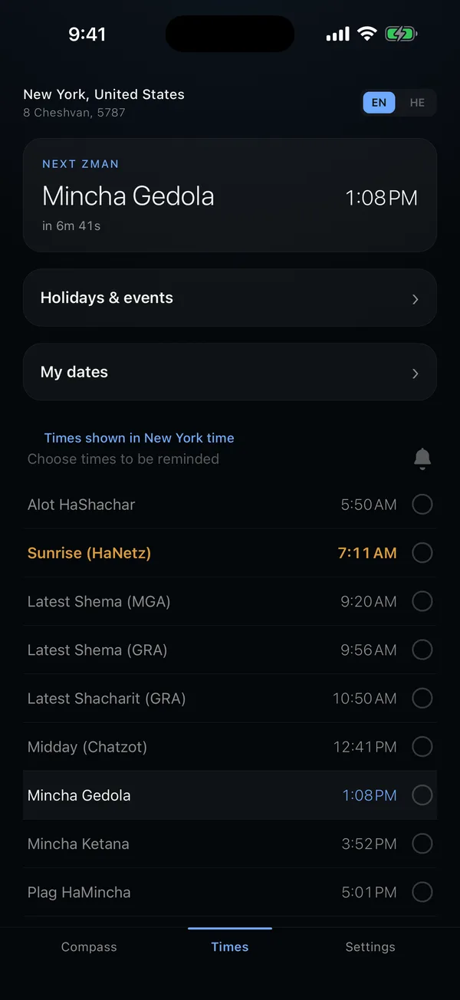
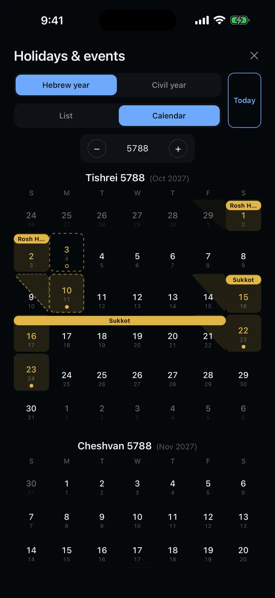
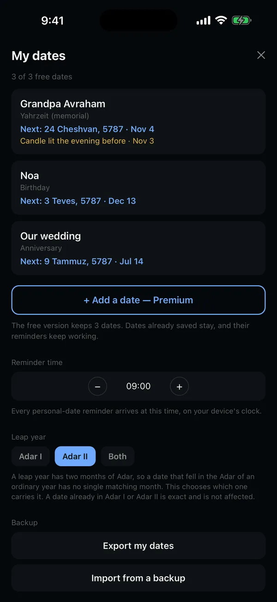

Your times, your dates.
Facing Jerusalem.
Zmanim, candle lighting and yahrzeits wherever you are, with a compass that finds Jerusalem. Free, private, offline.
Find Jerusalem from anywhere.
Pick a city, then turn the dial. When the star reaches the top, you are facing Jerusalem, exactly as the app shows it.
The direction, the distance, and this Shabbat.
Worked out here in your browser, from the city's coordinates: candle lighting 18 minutes before sunset (40 in Jerusalem), Shabbat ends at nightfall, Geonim 8.5°. The app uses your exact location and your minhag.
Every zman of your day.
From alot hashachar to tzeis hakochavim, for your exact location, with the next one counting down.

The whole year, at a glance.
Every festival and fast, the eves marked as half days, Hebrew and civil dates side by side. Israel and the diaspora each get their own calendar.

Your minhag, not ours.
Choose your shita and candle lighting, and match your local luach to the minute.
Your location stays on your phone.
Everything is computed on the device. No account, no ads, no tracking.
A yahrzeit, kept every year.
Enter the Hebrew date once. Moed finds it in every year to come, through leap years and short months, and reminds you on the eve, when the memorial candle is lit.

Try it with any Hebrew date.
Calculated in your browser, nothing is sent. In a leap year a plain Adar date falls in Adar II here; the app lets you choose Adar I, Adar II or both.
Five languages. All free.
Every screen, every zman and every holiday, in the language you pray in or the one you live in.
Questions people ask.
Is Moed free?
Yes. Zmanim, candle lighting, Shabbat and holiday times, reminders, the holidays calendar, the compass to Jerusalem and three personal dates are free. Premium adds unlimited personal dates, an AR camera compass, widgets and multiple saved locations.
How does Moed work out a yahrzeit?
You enter the Hebrew date once, or the civil date and whether it was after sunset. Moed finds that Hebrew date in every coming year, including the two months of Adar in a leap year and months that lose a day, and reminds you on the eve, when the memorial candle is lit.
Can I follow my own minhag?
Yes. You choose the tzeis shita (Geonim 8.5°, 16.1° or Rabbeinu Tam), candle lighting 18, 20, 30 or 40 minutes before sunset, and a manual offset to match your local luach.
Does it know Israel from the diaspora?
Yes. Yom Tov sheni, Simchat Torah and the holiday calendar follow where you are.
Does the app collect my location?
No. Every time is computed on your phone. Your location is never recorded or sent anywhere, and there is no account.
Does it work without internet?
Yes. Zmanim, the calendar, the compass and reminders are all calculated on the device.